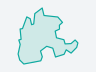

대시보드
내 프로젝트 4 모두 서비스 운영 중 · 시범 적용 7곳 · 마지막 분석 10.01 · 지금 돌고 있는 분석 없음
시군구 검색 — 바로 분석하기분석하기
내 프로젝트
프로젝트장 4 · 참여 0 · 보관 0프로젝트| 프로젝트 | 상태 | 학습 표본 | 저장 용량 | 마지막 | 할 일 |
|---|---|---|---|---|---|
 비닐하우스 2026증평군 · 함양군 · 남원시 비닐하우스 2026증평군 · 함양군 · 남원시 | 서비스 운영 중시범 적용 3곳 | 200장 | 10.2 MB | 10.01 | 표본 0/20새 영상 |
 건축물 2026원주시 | 서비스 운영 중시범 적용 1곳 | 139장 | 8.7 MB | 10.01 | 표본 0/20 |
 주차장 2026여주시 · 천안시 서북구 주차장 2026여주시 · 천안시 서북구 | 서비스 운영 중시범 적용 2곳 | 170장 | 9.0 MB | 10.01 | 표본 0/20 |
 곤포사일리지 2026보령시 곤포사일리지 2026보령시 | 서비스 운영 중시범 적용 1곳 | 60장 | 1.9 MB | 10.01 | 표본 0/20 |
합계 | 4 프로젝트 · 시범 7곳 | 569장 | 29.8 MB | 새 프로젝트 |
내 자원
할당과 쓴 양내 정보저장 공간29.8 MB 사용 · 할당 없음
- 비닐하우스 10.2
- 건축물 8.7
- 주차장 9.0
- 곤포사일리지 1.9
아직 저장 할당이 정해지지 않았습니다. 할당 받기
분석 사용9.30 – 10.01 · 내가 돌린 것
- AI 분석25건
- 필지 대조12건
- 모델 학습5번
- 걸린 시간 합3시간 22분
분석 시간에는 한도가 없습니다. 쓴 양만 보입니다.
분석
돌고 있는 것 · 끝난 것분석하기0돌고 있음0기다림지금 올리면 바로 시작됩니다
- 10.01 12:48남원시 2023 항공영상 준비 끝비닐하우스 2026 — 다시 분석 가능
- 10.01 12:01천안시 서북구 필지 대조 끝대장과 다른 후보 337필지
- 10.01 12:00천안시 서북구 AI 분석 끝건물 1,158동 · 13.0 km²
나에게 온 것
기관 · XI ChatGEO요청함- 0검토 요청기관이 "AI가 잘못 봤어요"라고 보낸 것 — 없음
- 1분석 의뢰 · 확인 대기광주전남특별시 · 순천시 외 2곳 드론 영상 — 관리자 승인 몫
- 4개선 후보 · 새로 옴XI ChatGEO가 못 한 요청 — "우리 시 현장 확인 필요 몇 건" 외 3
내 서비스가 돌고 있는 곳
시범 적용 7곳XI맵
비닐하우스증평군함양군남원시
건축물원주시
주차장여주시천안시 서북구
곤포사일리지보령시
팀과 소통
내 프로젝트의 메모 · 대화예시 — 지금 구성원 · 메모 0- LX 관리자비닐하우스 2026어제 17:40
@LX 직원 증평군 표본 10건은 제가 볼게요. 나머지 10건 부탁드립니다.
- LX 직원주차장 202610.01
천안시 서북구 결과 갱신 — 여주시와 견준 뒤 보고.
- LX 관리자건축물 202609.30
원주시 현장 사진 3장 표본 볼 때 같이 보세요.
비닐하우스 2026메모 남기기 · @이름
공지사항
LX 전체예시 — 지금 공지 0- 10.06영상 형식 표준 적용 안내새로 올리는 영상은 표준본으로 저장
- 10.02연휴 기간 분석 대기열 운영10.3–10.9 분석은 다음 날 아침 완료
- 09.30임시 비밀번호 바꾸기 안내
모두 보기